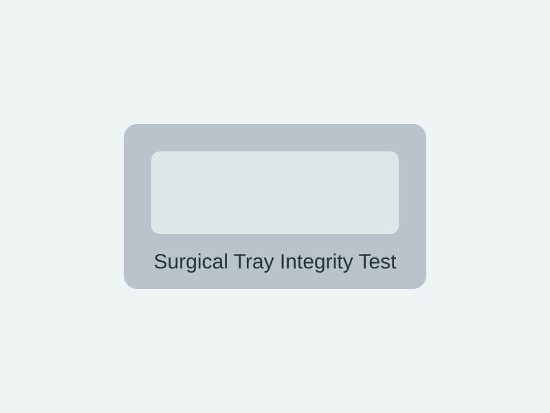
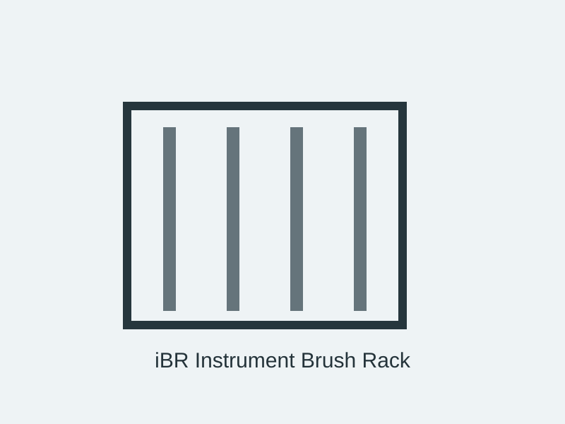
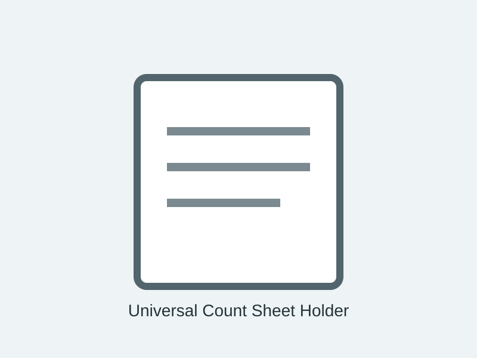
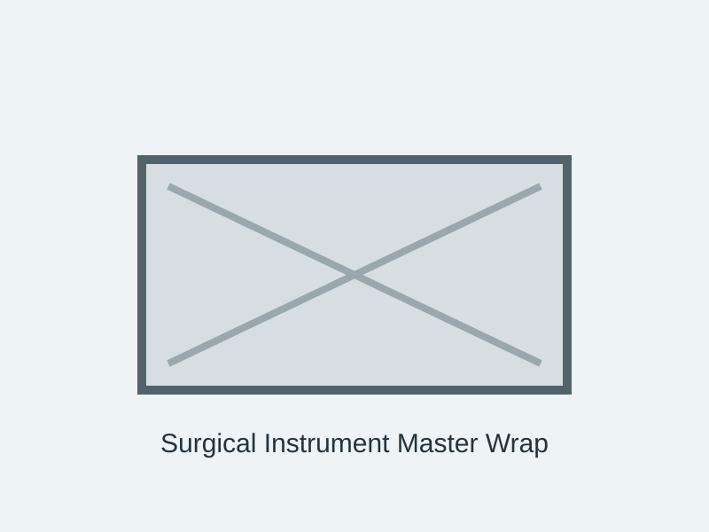
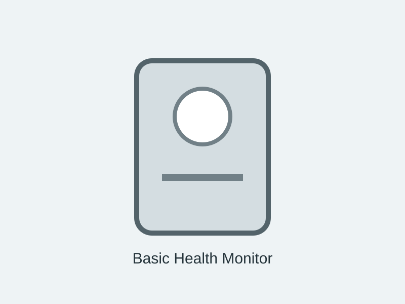
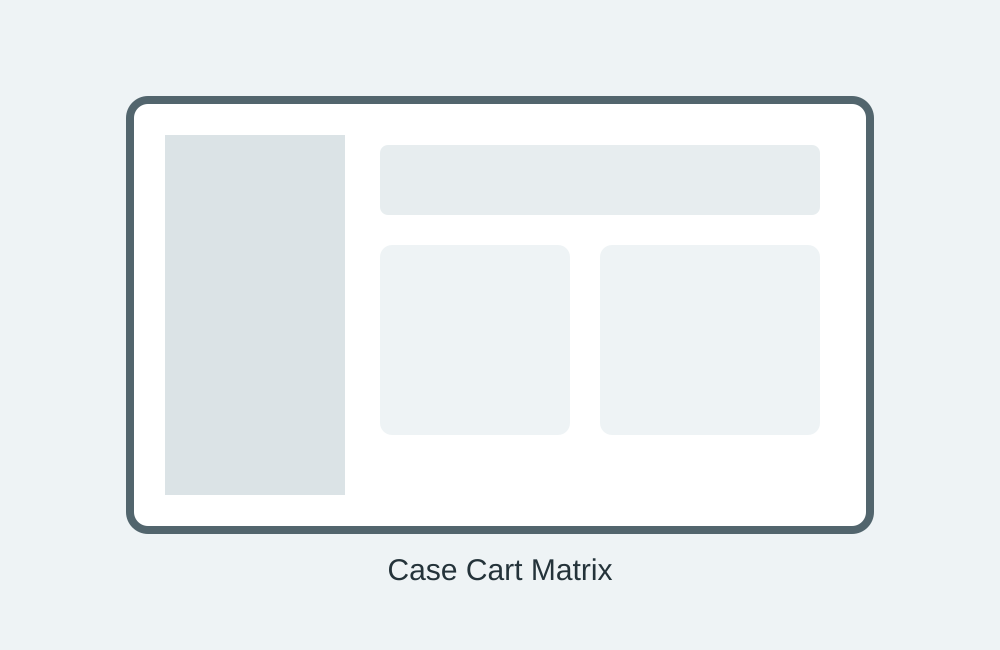
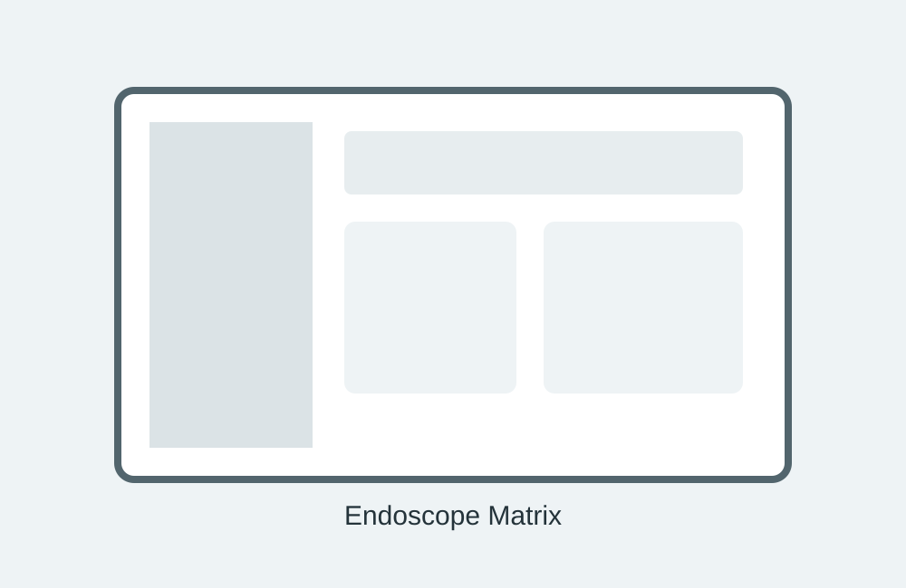

Surgical Tray Integrity Test
A practical tool for checking wrapped surgical trays before they move to the next stage of the workflow.
View productSURGICISS LTD brings together practical healthcare products and digital tools for surgical, sterile processing and day-to-day healthcare operations.
In healthcare, small details matter. Clear information, consistent processes and practical equipment can make everyday work easier. Our products and software are presented with those needs in mind.
Explore our range of healthcare products, instrument count sheet holders and software solutions in one place.
About SURGICISSOur catalogue is organised to help you find the right product, understand its intended use and get in touch with the team.

A practical tool for checking wrapped surgical trays before they move to the next stage of the workflow.
View product
A practical rack for keeping instrument brushes organised, easy to access and ready for sterile processing work.
View product
A purpose-built holder that keeps surgical count sheets organised and separate from instruments during processing.
View product
A protective wrap designed to help reduce handling-related damage to wrapped instrument trays.
View product
A simple, visible card for recording and communicating quality information about wrapped surgical instrument sets.
View product
A straightforward monitoring solution for healthcare environments where clear, accessible status information matters.
View productExplore the SURGICISS software portfolio and request a trial conversation where appropriate.
A software solution focused on structured information and AI-assisted analysis for sterile processing workflows.
Learn more
A structured digital workflow for organising case-cart information and supporting consistent preparation.
Learn moreA digital workflow for organising crash-cart information and supporting readiness checks.
Learn more
A structured software solution for managing information associated with endoscope workflows.
Learn more